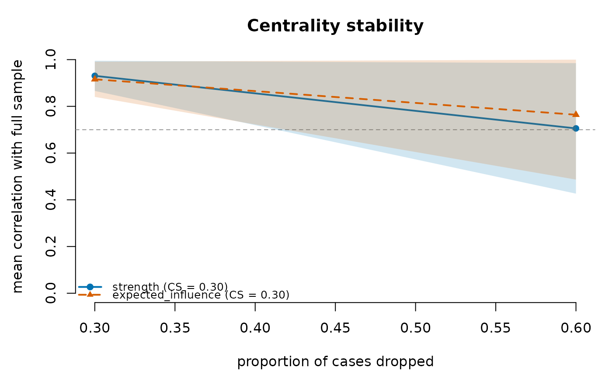

Assess the stability of centralities when cases are dropped
Source:R/plot.R, R/stability.R
net_stability.Rdnet_stability() assesses how stable the centralities of a network are when
cases are dropped, using the case-dropping bootstrap (Epskamp, Borsboom &
Fried, 2018). The network is re-estimated on subsets of the data from which
an increasing proportion of cases has been removed, the centralities of each
subset are correlated with those of the full sample, and the
correlation-stability coefficient (CS-coefficient) summarizes the result:
the largest proportion of cases that can be dropped while the subset
centralities still correlate highly with the full-sample centralities in
nearly all subsets.
Centrality indices are often used to rank the nodes of a psychometric network, for example to identify the symptoms most strongly connected to the others, and such a ranking is informative only if a similar ranking would be found in another sample. Epskamp, Borsboom and Fried (2018) suggest that the CS-coefficient should not be below 0.25, and preferably above 0.5, before differences in centrality are interpreted.
The function draws iter subsets without replacement at every proportion in
drop_prop, re-estimates the network on each, and correlates each subset's
centralities with the full-sample centralities, for every measure in
measures. The CS-coefficient of a measure is the largest proportion at
which the share of subsets whose correlation exceeds threshold itself
exceeds certainty, or 0 when no proportion qualifies.
It returns the summary by drop proportion, the CS-coefficient of each
measure and the correlation of every subset, read with as.data.frame().
For the stability of the edge weights rather than the centralities, use
net_casedrop_reliability(); for intervals around each edge and
centrality, use net_boot().
Usage
# S3 method for class 'psychnet_stability'
plot(x, ...)
net_stability(
data,
method = "glasso",
measures = c("strength", "expected_influence"),
centrality_fn = NULL,
drop_prop = seq(0.1, 0.9, by = 0.1),
iter = 100L,
threshold = 0.7,
certainty = 0.95,
cor_method = c("pearson", "spearman"),
labels = NULL,
estimator_args = list(),
...
)
# S3 method for class 'psychnet_stability'
print(x, ...)
# S3 method for class 'psychnet_stability'
as.data.frame(
x,
row.names = NULL,
optional = FALSE,
...,
what = c("table", "cs", "correlations")
)Arguments
- x
A
psychnet_stabilityobject.- ...
Further arguments for the estimator (
net_stability()); ignored by the methods.- data
A data frame or matrix with one row per observation, or a psychnet_group estimated from a data set (assessed per group).
- method
The estimator, as in
psychnet(). Default"glasso".- measures
Centrality measures to assess. Default
c("strength", "expected_influence"); any measure accepted bynet_centralities()can be added.- centrality_fn
Optional function supplying measures that are not built in (see
net_centralities()).- drop_prop
Proportions of cases to drop, each in (0, 1). Default
seq(0.1, 0.9, by = 0.1). Each must remove at least one case and keep at least two.- iter
Number of subsets per proportion. Default
100.- threshold
Correlation a subset must exceed to count as stable, a number in (0, 1). Default
0.7.- certainty
Share of stable subsets that must be exceeded, a number in (0, 1). Default
0.95.- cor_method
Correlation between subset and full-sample centralities:
"pearson"(default, as inbootnet) or"spearman"(stability of the ranking).- labels
Optional node labels, one per node.
- estimator_args
Named list of arguments for the estimator. Use it for an estimator argument that shares a name with an argument of
net_stability(), e.g.estimator_args = list(threshold = TRUE).- row.names, optional
Ignored.
- what
For
as.data.frame():"table"(default),"cs"or"correlations".
Value
net_stability() returns an object of class psychnet_stability.
Its tables are read with as.data.frame():
as.data.frame(x)(what = "table"): one row per measure and drop proportion, with columnsmeasure,drop_prop(nominal),actual_drop(the proportion dropped after rounding to whole cases),mean_corandsd_cor(over the defined correlations),prop_above(share of subsets with a correlation abovethreshold) andn_valid(subsets with a defined correlation).what = "cs": one row per measure, with columnsmeasureandcs.what = "correlations": one row per measure and subset, with columnsmeasure,drop_prop,subsetandcorrelation(NAwhen undefined or when the subset could not be estimated), from which the CS-coefficient can be recomputed.
print() shows the estimator, the number of subsets per proportion and
the CS-coefficient of each measure; print() and plot() return x
invisibly. For a psychnet_group, net_stability() returns one result
per group (see psychnet_result_group).
Details
Both comparisons in the CS rule are strict, as in bootnet::corStability().
The correlation of a subset is 0 when either centrality vector is constant
across nodes, and undefined when fewer than two values are available. An
undefined correlation, or a subset on which the network could not be
estimated, counts as not exceeding threshold, so such subsets never raise
the CS-coefficient (bootnet instead leaves undefined correlations out). A
measure whose full-sample centrality is constant has a CS-coefficient of 0.
Each subset is passed to the estimator as the full data would be (see
net_boot()). The subsets are drawn before any network is fitted, so the
result is reproducible with set.seed().
Functions
plot(psychnet_stability): The mean correlation with the full-sample centralities against the proportion of cases dropped, one line per measure (each with its own colour, line type and point shape) with a band of +/- 1 SD, thethresholdas a dashed line, and each measure's CS-coefficient in the legend.print(psychnet_stability): The estimator, the subsets per proportion and the CS-coefficient of each measure.as.data.frame(psychnet_stability): The summary by drop proportion (what = "table"), the CS-coefficient of each measure (what = "cs"), or the correlation of every subset (what = "correlations").
Conditions
psychnet_bad_input for an invalid argument, including drop proportions
that remove no case or keep fewer than two, and for a group that was not
estimated from a data set; psychnet_estimation_failed when the network
cannot be estimated on the full data; psychnet_resample_failed (warning)
when some subsets cannot be estimated, naming the first error, and as an
error when none can; psychnet_constant_centrality (warning) when a
full-sample centrality is constant across nodes;
psychnet_constant_variable (warning) when a constant column is dropped.
References
Epskamp, S., Borsboom, D., & Fried, E. I. (2018). Estimating psychological networks and their accuracy: A tutorial paper. Behavior Research Methods, 50(1), 195-212. doi:10.3758/s13428-017-0862-1
See also
net_casedrop_reliability() for the edge weights; net_boot()
for bootstrap intervals; net_centralities() for the measures.
Examples
set.seed(1)
x <- matrix(stats::rnorm(200 * 5), 200, 5) %*% chol(0.4^abs(outer(1:5, 1:5, "-")))
colnames(x) <- paste0("V", 1:5)
# method = "pcor" and a small iter keep this example fast; a real analysis
# uses the "glasso" default and iter = 100.
cs <- net_stability(x, method = "pcor", drop_prop = c(0.3, 0.6), iter = 10)
cs # the CS-coefficient of each measure
#> <psychnet_stability> pcor, 10 subsets/proportion
#> CS-coefficient (pearson cor > 0.70 in > 95% of subsets):
#> strength 0.30
#> expected_influence 0.30
as.data.frame(cs, what = "cs") # the same, as a data frame
#> measure cs
#> 1 strength 0.3
#> 2 expected_influence 0.3
as.data.frame(cs) # correlations by drop proportion
#> measure drop_prop actual_drop mean_cor sd_cor prop_above
#> 1 strength 0.3 0.3 0.9306284 0.06450754 1.0
#> 2 strength 0.6 0.6 0.7056495 0.27932616 0.7
#> 3 expected_influence 0.3 0.3 0.9158786 0.07540226 1.0
#> 4 expected_influence 0.6 0.6 0.7640418 0.27749172 0.6
#> n_valid
#> 1 10
#> 2 10
#> 3 10
#> 4 10
plot(cs) # mean correlation by drop proportion
